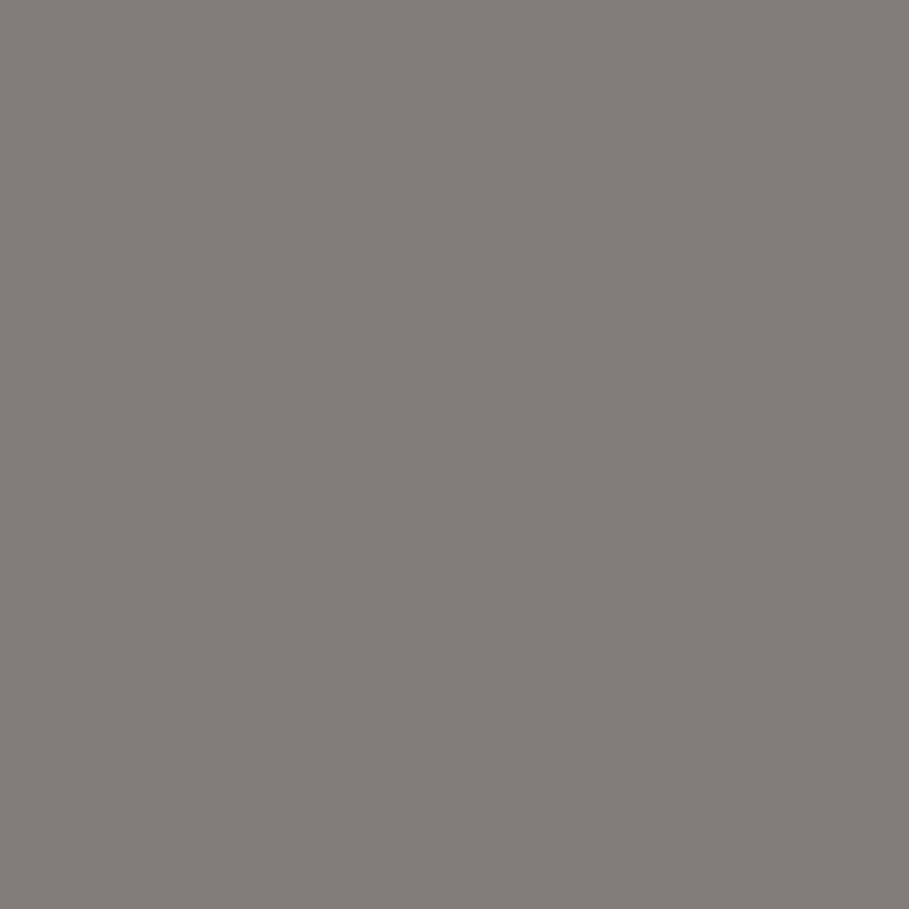

Streaming & Netwerk Setup
Voor dit project heb ik een volledige werk- en streamingplek ontworpen en opgebouwd. De focus lag op zowel strak kabelbeheer en netwerkprestaties als een visuele uitstraling die past bij moderne e-sports uitzendingen.

Bekijk alle projecten